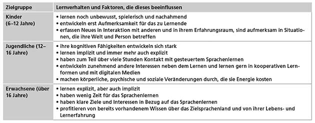
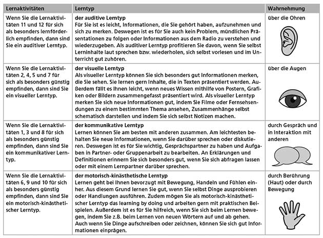
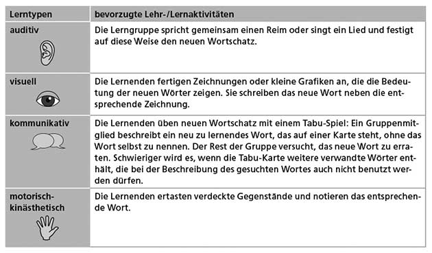
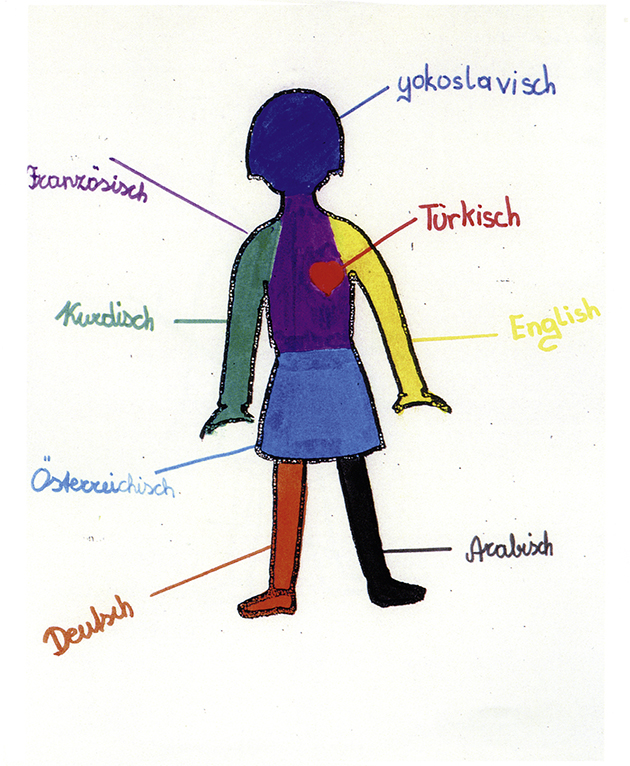
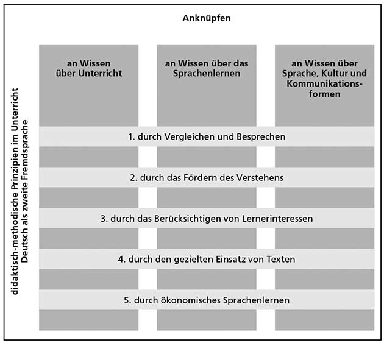
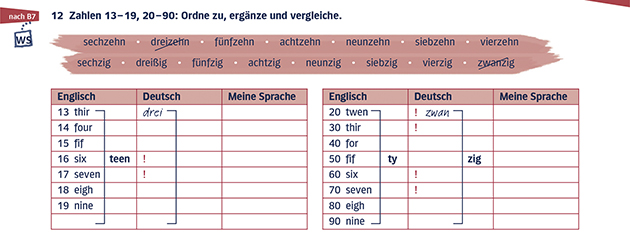

2 Deutsch als fremde Sprache (DLL2)
Im ersten Kapitel werden Sie zunächst über die Faktoren nachdenken, die das Fremdsprachenlernen Ihrer Zielgruppe beeinflussen:
- Welche Motivation und welche Vorerfahrungen?
- Wer sind die Lernenden? Sie bringen unterschiedliche kognitive Voraussetzungen mit, haben individuelle Vorlieben, wie sie lernen möchten, und schließlich sind sie auch unterschiedlich motiviert, Sprachen zu lernen.
- Vergleich Kinder, Jugendliche. vs. Erwachsene
Das folgende Schaubild fasst die Kontextfaktoren, die das Sprachenlernen Ihrer Lernenden beeinflussen, noch einmal zusammen:

2.1 Wie lernt man eigentlich Fremdsprachen?
Im zweiten Kapitel haben wir für Sie relevante Ergebnisse der Sprachlehr- und -lernforschung zusammengestellt. Wir erläutern, was wissenschaftliche Theorien über das Lernen allgemein und das Lernen von Sprachen im Besonderen aussagen. Diese Theorien sollen Ihnen helfen, die Lernprozesse, die Sie im Unterricht bei Ihren Lernenden beobachten, zu deuten und zu verstehen. Die theoretischen Modelle erklären viele Aspekte des Sprachenlernens wie z.B. die Entstehung von Fehlern: Manche können Sie mit Ihrem Unterricht beeinflussen, andere nicht oder nur schwer, aber Sie können Probleme des Sprachenlernens dadurch erkennen und neu bewerten.
Ziel dieses Teilkapitels ist, dass Sie
allgemeine Lerntheorien kennenlernen, die jeweils bestimmte Aspekte des Lernens beschreiben,
Rückschlüsse von den allgemeinen Lerntheorien auf das Sprachenlernen ziehen können,
wissen, welche Konsequenzen man aus den Lerntheorien für Unterricht ableiten kann.
2.2 Was weiß man über das Lernen:
Lernen vs. Erwerben: Wenn ein kleines Kind mit dem Spracherwerb beginnt, verwendet man dafür den Begriff erwerben. Mit Erwerben wird ein ungesteuerter Vorgang bezeichnet, der in einer außerunterrichtlichen Situation im Rahmen von natürlicher Kommunikation stattfindet.
Im Unterschied zum Erwerben bezeichnet lernen einen Prozess, der durch Unterricht gesteuert wird.
Beim Lernen verändern sich Wissen, Einstellungen, Fertigkeiten oder Verhaltensweisen aufgrund von (unterrichtlicher) Erfahrung.
2.2.1 Lerntheorien
Behaviorismus: Das Lernen wird in dieser Theorie als eine Verhaltensänderung gesehen. Dazu wird ein auslösender Impuls (stimulus) benötigt, auf den eine Reaktion der Lernerin / des Lerners (response) erfolgt. Lernen ist demnach ein imitativer Prozess. Das heißt: Die Umwelt liefert das korrekte Vorbild, das Lernende nachahmen sollen. (Drill-Übungen ; aber für Automatisierung sehr wichtig)
Kognitivismus: Der Kognitivismus geht davon aus, dass gelernt wird, indem neue Informationen mit zuvor bereits verarbeiteten und gespeicherten Informationen verknüpft werden. Lernen ist nach dieser Theorie also ein Prozess, in dem bewusst Neues erkannt und in bestehendes Wissen integriert wird. Aus diesem Grund ist das einsichtige und bewusste Lernen in dieser Theorie zentral. Für den Unterricht kann man aus dieser Theorie ableiten, dass die Vermittlung von Lernstrategien und die Förderung von bewusstem Lernen wesentlich sind. Auch ein induktives Vorgehen im Unterricht, bei dem die Lernenden aufgefordert sind, Regelmäßigkeiten selbst zu entdecken, wird durch diese Theorie begründet.
Konnektionismus: Diese Lerntheorie erklärt vor allem, wie neue Informationen verarbeitet und im Gedächtnis gespeichert werden. Vernetzung durch neurale Netze wobei unterschiedliche Gehirnareale unterschiedliche Aufgabe zukommen. Die konnektionistische Lerntheorie beschreibt Lernen als einen Prozess, bei dem Wissen in Form von Knotenpunkten in Netzen gespeichert wird. Je öfter man die Verbindungen zwischen Wissenseinheiten aktiviert, desto besser sind sie im Gedächtnis verankert. Für Sprachunterricht leitet sich aus dieser Lerntheorie ab, dass neue Informationen oder Wissen so vermittelt werden, dass Lernende Verknüpfungen aufbauen können. So können neue Wörter in Wortfeldern angeboten werden, sie können mit Synonymen oder gemeinsam mit ihrem Gegenteil, dem Antonym, präsentiert werden; all dies wäre nach dieser Theorie förderlich für das Lernen.
Konstruktivismus: Lernen wird erst durch die Aufnahme der neuen Informationen in das bereits vorhandene Wissen eines Lernenden möglich. Lernen ist also die aktive Konstruktion von neuem Wissen. Konstruktivistische Lerntheorien betonen aber darüber hinaus die Individualität von Lernprozessen und damit auch von Lernergebnissen: Der Mensch erschafft in Wechselwirkung mit seiner Umwelt neues Wissen. Nur wenn ein Lerner selbst ein Mindestmaß an Interesse, Lust oder Druck empfindet, wird sie/er sich neues Wissen aneignen können. Für die unterrichtliche Gestaltung von Lernprozessen ist zentral, dass Lernende sich ihre Vorkenntnisse bewusst machen, dass sie an diese anknüpfen und ihr Wissen ordnen. Lernende erarbeiten sich durch Ausprobieren, Beobachten und durch Entdecken neues Wissen und stellen dieses Wissen im besten Fall auch in eigenen Produkten dar (in Texten, in mündlichen Präsentationen, in Form von Grafiken oder Modellen). Dies ist die Vorgehensweise von projektorientiertem Lernen. Mit dem Konstruktivismus verändert sich das Verständnis von der Rolle der Lehrkraft. Sie unterstützt beim Lernen, indem sie Lernwege aufzeigt und die Selbstorganisation der Lernenden fördert. Dementsprechend haben Lehrende auch Aufgaben als Lernberater und Moderatoren.
Interaktionismus: Für den Interaktionismus ist die soziale Umwelt der Lernenden zentral für das Lernen. Die sprachliche Entwicklung eines Menschen ist gemäß dieser Theorie abhängig von den Möglichkeiten und Erfahrungen, die im Umgang mit anderen gesammelt werden. Mit anderen Menschen tauschen wir Ideen und Lösungen für Probleme aus und verwenden dabei Sprache. Dabei wird gemeinsames Lernen möglich. Da der Fremdsprachenunterricht aber auf die Kommunikation außerhalb des Klassenzimmers vorbereiten will, ergibt sich ein Paradox. Es gibt verschiedene Möglichkeiten, dieses Paradox zu überwinden (Gruppen- oder Partnerarbeit, Rollenspiele).
Die folgende Abbildung zeigt Ihnen im Überblick, was Sie über die verschiedenen Arten erfahren haben, wie Lernen funktioniert:
2.3 Was weiß man über den Spracherwerb?
Ziel dieses Teilkapitels ist, dass Sie
- verschiedene Spracherwerbskontexte voneinander unterscheiden können,
- Spracherwerbshypothesen kennenlernen und wissen, welche Konsequenzen sie für die Unterrichtsgestaltung haben können,
- wissen, warum es im Spracherwerbsprozess zu Fehlern kommt, und Sie die Fehler Ihrer Lernenden analysieren und Vermutungen über ihre Ursachen anstellen können,
- wissen, inwiefern sich das Lernen einer ersten Fremdsprache vom Lernen aller weiteren Fremdsprachen unterscheidet.
2.3.1 Spracherwerbskontexte
- No Muttersprache: Erstsprache weil sonst verwirrend
- Menschen können monolingual, bilingual oder multilingual aufwachsen
- Sukzessive Zweisprachigkeit: Ab 3 Jahren eine weitere Sprache lernt
- Fremdsprachen werden unterrichtlich gesteuert gelernt, da sie meist im Unterricht oder in anderen institutionell geprägten Lehr- und Lernsituationen vermittelt wird; insbesondere im Vergleich zu Zweitsprachen
2.3.2 Spracherwerbshypothesen
angeborene Spracherwerbsfähigkeit: Kinder rezipieren die Umwelt
Nativistische Ansätze sagen, dass Menschen eine angeborene Fähigkeit haben, Sprache zu erwerben. Aus diesen Überlegungen ist die Identitätshypothese entstanden, die auch den Fremdsprachenerwerb auf der Basis der angeborenen Fähigkeiten zu erklären versucht.
Die Identitätshypothese geht davon aus, dass die zu lernende Sprache eine Art Spracherwerbsmechanismus auslöst, wie er auch beim Erstspracherwerb wirkt. Als Begründung wird die generelle Sprachfähigkeit von Menschen angeführt. Fremdsprachen werden auf der Basis angeborener Sprachlernfähigkeiten gelernt.
Grundannahme der Lehr-/Lernbarkeitshypothese: Erwerbssequenzen (kam, kommte, kamte, nein, kam) sind also relativ gut vorhersehbare Abfolgen, in denen bestimmte Bereiche von Sprache erworben werden. Diese Erwerbssequenzen müssen offenbar durchlaufen und können nur selten übersprungen werden.
Die Lehr-/Lernbarkeitshypothese geht davon aus, dass es eine vorgegebene Reihenfolge beim Erwerb von Strukturen einer Sprache gibt und sich diese Reihenfolge nicht beeinflussen oder verändern lässt. Lernprozesse können nur dann erfolgreich verlaufen, wenn sie auf das nächste Stadium des Erwerbs bei den Lernenden Bezug nehmen. Damit eine sprachliche Struktur aufgenommen, mental verarbeitet und in den Wissensstand aufgenommen werden kann, muss bei den Lernenden die mentale Bereitschaft dazu bestehen.
Lernervarietäten (Lernersprache): Eine Lernervarietät ist eine systematische Abweichung von der theoretischen Norm einer Sprache. Sie ist vom individuellen Stand des Spracherwerbs abhängig. Beispiel: Man hört haufig du trinkst, und sagt dann ich trinkst.
Die Interlanguage-Hypothese stellt eine Weiterentwicklung der Identitätshypothese dar. Lernende bilden nach dieser Hypothese fortlaufend Lernervarietäten oder Zwischensprachen aus. Diese weisen Elemente der Erst- und Zielsprache auf, jedoch auch eigene, nicht in einer der beiden anderen Sprachen zu findende Phänomene. Diese Zwischensprachen sind gleichermaßen systematisch und variabel, d.h., die Zwischenschritte geschehen nicht willkürlich, befinden sich aber in einem stetigen Prozess der Veränderung. Nach der Interlanguage-Hypothese kann es dabei zu sogenannten Fossilierungen kommen, wenn sich bestimmte, zum Teil fehlerhafte Äußerungen, fest einprägen und nicht mehr verändert werden.
Einflüsse der Erstsprache auf das Fremdsprachenlernen (Transfers): Ist der Transfer negativ, entstehen also daraus Fehler, nennt man dies Interferenz. Demnach sind alle Fehler, die durch einen negativen Transfer von der Erst- in die Zweitsprache entstehen, Interferenzfehler.
Die Kontrastivhypothese geht davon aus, dass eine neue Sprache schlechter gelernt wird bzw. schwieriger zu lernen ist, wenn sie große strukturelle Unterschiede zur Erstsprache aufweist. Je größer die Unterschiede zwischen Erstsprache und zweiter Sprache sind, desto mehr Interferenzen ergeben sich. Diese lassen sich aufgrund von kontrastiven Vergleichen beider Sprachen herausfiltern und erklären. Gegen die Kontrastivhypothese ist einzuwenden, dass strukturelle Ähnlichkeiten zwischen Sprachen nicht automatisch zu erfolgreichem Lernen führen müssen. Außerdem kann man von einem konkreten Fehler nicht automatisch auf einen Rückgriff auf die Erstsprache schließen.
Aus der Psycholinguistik stammt das Konzept des mentalen Lexikons (neuronales Netz). Es beschreibt, wie mentale Repräsentationen von Wörtern in Verbindung zueinander stehen und wie diese es Menschen ermöglichen, Sprache zu benutzen. Ein Wort im Kopf eines Sprachbenutzers ist einerseits über grammatische Merkmale (Wortart, Flexion, Genus, Morphologie usw.) und andererseits über phonologische (Aussprache) bzw. graphematische Merkmale (z.B. durch das Schriftbild) im mentalen Lexikon verankert, damit es produziert werden kann. Schließlich beinhaltet der Eintrag im mentalen Lexikon noch eine bestimmte Bedeutung sowie Querverweise zu anderen Wörtern und Konzepten. Wörter, die synonym sind oder zum selben Wortfeld gehören, werden mit aufgerufen, ebenso wie individuelle Vorstellungen (persönliche Bezüge).
Im Rahmen der Inputhypothese wird davon ausgegangen, dass das Sprachenlernen von Erst- und Fremdsprache ohne ausreichenden Input nicht möglich ist. Input ist in jeder Form von Kontakt mit Sprache möglich (Medien). Hier zählt die Qualität des sprachlichen Inputs. Input vs. Intake. Input bezieht sich hier nur auf das, was die Lernenden an Sprachkontakt erreicht; Intake bezieht sich auf das, was sie davon wirklich verarbeiten. Die Inputhypothese besagt, dass der sprachliche Input für die Lernenden zum Intake werden muss. Lernende können neue sprachliche Phänomene dann aktiv verwenden, wenn sie sie für sich mit Sinn füllen und sie bewusst verarbeiten. Drill-Übungen, die den Erwerb von Wortschatz und Strukturen durch schematisches Wiederholen trainieren, sind aus Sicht der Inputhypothese keine angemessene Übungsform.
Der Output zeigt, was jemand in einer Sprache tatsächlich produktiv anwenden kan Während Output das bezeichnet, was sich am Ende des Unterrichts als dessen nachweisbares Ergebnis feststellen lässt, beschreibt Outcome die langfristige Wirkung des Gelernten und zeigt damit die sprachliche Kompetenz der Lernenden.
Die Interaktionshypothese besagt, dass der Unterricht – verstanden als Interaktion zwischen Lehrenden und Lernenden oder der Lernenden untereinander – einer Sequenz potentieller Lernmomente gleichkommt, die die Lernenden je nach Bereitschaft, Motivation, Zielsetzung usw. unterschiedlich nutzen. Sprache wird erlernt durch das Aushandeln von Bedeutungen (Partnerarbeit).
Mehrsprachigkeitsmodelle: Die verschiedenen Sprachen interagieren bei der Sprachverarbeitung/-produktion miteinander.
Wir haben uns nun aus der Sicht von Fehlererkennung und Fehlerdiagnose mit verschiedenen Spracherwerbshypothesen und ihren Auswirkungen auf den Unterricht beschäftigt. Dabei wurde deutlich,
- dass die Fähigkeit, Sprachen zu erwerben, den Menschen angeboren ist,
- dass die Erstsprache das Lernen der Fremdsprachen beeinflusst,
- dass das Fremdsprachenlernen ähnlich wie der Erwerb der Erstsprache in bestimmten Sequenzen geschieht,
- dass Lernende nicht allen Input, den sie bekommen, verarbeiten und speichern,
- dass Lernen aber dann geschieht, wenn Input zu Intake wird,
- dass Lernende in Interaktion mit anderen durch das Aushandeln von Bedeutung lernen.
Die Erkenntnisse der Spracherwerbshypothesen können Ihnen helfen, Fehler, die Ihre Lernenden machen, zu verstehen, zu analysieren, ihre Herkunft einzuschätzen und sinnvoll mit ihnen umzugehen. Wie wir gesehen haben, sind Fehler nicht nur Produkte, die im Fremdsprachenunterricht vorkommen und beseitigt werden müssen. Vielmehr geben sie wichtige Hinweise darauf, wieweit die Lernenden auf dem Weg von der Erst- zur Zielsprache vorangeschritten sind.
2.3.3 Konsequenzen für den Unterricht
Vielleicht hatten Sie selbst schon erste Ideen, wie man die Aussagen der besprochenen Hypothesen für die Progressionim Unterricht nutzbar machen kann, d.h. für die Reihenfolge, was wann im Fremdsprachenunterricht gelernt werden soll und kann. Anhand der Lehr-/Lernbarkeitshypothese fassen wir noch einmal beispielhaft zusammen, welche Hinweise Ihnen diese für die Unterrichtsprogression und Ihre Unterrichtsplanung gibt:
Bestimmte Stufen im Erwerbsprozess einer Sprache können nicht übersprungen werden, sondern müssen nacheinander durchlaufen werden. Ihr Lehrwerk berücksichtigt dies. Die Lehr-/Lernziele sind an die Erwerbssequenzen der Lernenden angepasst.
Bei der Vermittlung von neuen Strukturen sollte nicht das komplette Phänomen mit all seinen Sonderfällen präsentiert werden, sondern nur die Teilbereiche, die zur aktuellen Erwerbssequenz der Lernenden passen und verstehbar sind.
Um den Lernleistungen individueller Lernender gerecht zu werden, kann es manchmal nötig sein, sehr langsam vorzugehen und Wiederholungsschleifen einzubauen.
Fehler, die entstehen, wenn Lernende noch nicht in der Lage sind, in eine neue Erwerbssequenz einzutreten, können zwar korrigiert werden, die Korrekturen wirken sich aber erst dann aus, wenn die Lernenden in der Lage sind, das neue Phänomen – aufbauend auf dem bereits Bekannten – zu verstehen. Erst dann können sie es auch korrekt anwenden.
2.4 Worin unterscheiden sich meine Lernenden?
Anschließend wenden wir uns den Lernenden genauer zu und thematisieren ihre individuellen Unterschiede: wie sich das Alter auf den Lernerfolg auswirkt, welche emotionalen und kognitiven Faktoren beim Lernen eine Rolle spielen und wie wichtig es ist, dass alle Lerntypen einen Zugang zum Lernstoff finden.
2.4.1 Alter
Angeborene Spracherwerbsmechanismen treten in Kraft, ohne dass sie den Lernenden bewusst sind, und sorgen für sogenanntes implizites Lernen. Aufbauend auf den von Natur aus vorhandenen Lernfähigkeiten entwickelt der Mensch im Laufe seines Lebens aber auch bewusste Lern- und Problemlösetechniken, die immer mehr Wirkung entfalten. Wir sprechen dann von explizitem Lernen.
Da man beobachten kann, dass Kinder in einigen Bereichen schneller als Erwachsene zielsprachliches Niveau erreichen, wird die Existenz einer sensiblen Phase oder kritischen Periode des Spracherwerbs diskutiert. Zentrale Annahme ist dabei, dass bestimmte Kenntnisse, Eigenschaften, Fähigkeiten oder Verhaltensweisen – in diesem Fall Elemente einer weiteren Sprache – nur in einem begrenzten Zeitfenster erworben werden können. Man nimmt an, dass, wenn die sensible Phase abgeschlossen ist, im Normalfall nach dem Ende der Pubertät, diese Elemente einer Sprache nicht mehr bis zum zielsprachlichen Niveau erworben werden können.
Kinder häufig im Vorteil beim Spracherwerbung, aber: Im Sprachunterricht lernen Jugendliche und junge Erwachsene Fremdsprachen gewöhnlich sogar schneller als Kinder. Teile des Spracherwerbs beruhen auf implizitem Lernen, aber je älter die Lernenden sind, desto bedeutsamer werden bewusste Lernprozesse und das explizite Lernen. Erwachsene lernen Untersuchungen zufolge lieber und gut durch Unterricht. Sie können explizite Lernprozesse aufgrund ihrer kognitiven Entwicklung besser verarbeiten und reflektieren als Kinder, weshalb beispielsweise die Bewusstmachung von grammatikalischen Strukturen für diese Zielgruppe besonders sinnvoll ist.
Auch im ungesteuerten Zweitsprach(en)erwerb sind jüngere Erwachsene häufig im Vorteil. Zwar weisen sie Fehler bei der Aussprache und der Verwendung von Kasus, Tempus, Modus usw. (Morphosyntax) auf, doch im Bereich von Wortschatz und von Sprache in konkreten Situationen (Pragmatik) erreichen sie schneller zielsprachliche Kompetenzen als Kinder. Erwachsene verfügen über mehr Weltwissen als Kinder und können sprachlichen Kontakt mit Deutschsprachigen anders verarbeiten und bewusst reflektieren. Daher können sie ihr eigenes sprachliches Verhalten besser an die Umgebung anpassen bzw. Normen besser wahrnehmen und einordnen. Kulturelle Konventionen, die in verschiedenen Situationen eingehalten werden müssen, werden von ihnen bewusst verarbeitet.
Merkmale impliziten Lernens im Unterricht für Kinder:
Die Fertigkeiten Hören und (Nach-)Sprechen stehen im Vordergrund.
Es gibt keine direkten Hinweise auf die unbestimmten Artikel und die Deklination im Akkusativ, dennoch sind die Artikel in der Akkusativform deutlich visualisiert.
Neue Wörter werden mit Bildkarten visualisiert; die Aufmerksamkeit wird durch Farben auf die Genera gelenkt.
Geübt wird, indem gespielt und interagiert wird (Ratespiel, Tamburinspiel, Spiel: Eins, zwei, drei oder vier).
Die Schülerinnen und Schüler bewegen sich im Klassenzimmer und prägen sich darüber die unbestimmten Artikel und die Nomen mit demselben Artikel an der Tafel ein (Merkhilfe).
Die Verwendung des unbestimmten Artikels im Akkusativ wird in ganz verschiedenen Lernaktivitäten mehrfach wiederholt.
Mit der folgenden Übersicht fassen wir noch einmal zusammen, worin sich das Lernen von Kindern, Jugendlichen und Erwachsenen unterscheidet:
 ### Emotionen und Kognitionen beim Sprachlernen
Wir müssen auf die Bedürfnisse und Voraussetzungen der Lernenden bei der Unterrichtsplanung und -durchführung eingehen. Wenn dies gelingt, spricht man von Lernerorientierung im Unterricht.
Lernerfaktoren sind besondere Merkmale oder Eigenschaften von Lernenden, die das individuelle Sprachenlernen maßgeblich beeinflussen, z.B. das Alter der Lernenden, aber auch Ängste im Zusammenhang mit dem Lernen einer Sprache, die Einstellung der Lernenden zur Zielsprache und zur Zielkultur, die Motivation und Sprachlerneignung sowie der individuelle Lernstil.

Bla bla über Lerntypen:
  Impulsive versus reflexive Lernende
Man unterscheidet Lernende, die eher reflexiv an eine Lernaufgabe herangehen, und solche, die eher impulsiv beim Lernen vorgehen. Diese Bezeichnungen drücken aus, wie spontan Lernende beim Lösen von Aufgaben sind. Reflexiv handelnde Lernende wollen ihre Aufgaben erst gründlich durchdenken, bevor sie sich äußern. Deswegen brauchen sie Zeit, um zu einer Lösung zu kommen, und arbeiten meist langsamer und sorgfältiger als impulsiv vorgehende Lernende. Die Arbeitsergebnisse zeigen in der Regel weniger Fehler als die von impulsiven Lernenden, die in etwa die gleiche Sprachkompetenz haben. Reflexive Lernende formulieren ihre Aussagen oft innerlich vor, bevor sie sich zu Wort melden. Impulsive Lernende äußern sich dagegen oft spontan und nehmen Fehler in Kauf.
Globale versus analytische Lernende
Mit den Begriffen global und analytisch unterscheidet man die Art und Weise, wie Lernende den Lernstoff erschließen. Globale Lernende sind solche, die zunächst einen Überblick über den Lernstoff möchten, bevor sie die Details verstehen können. Im Unterschied dazu konzentrieren sich analytische Lernende zunächst auf Einzelheiten, die sie dann zu einem Gesamtbild kombinieren. Analytische Lernende lernen gern allein, während globale Lernende einen kommunikativen Unterricht und den Austausch mit anderen bevorzugen.
Ambiguitätstolerante versus ambiguitätsintolerante Lernende
Diese beiden Begriffe beschreiben, inwieweit eine Lernerin / ein Lerner bereit ist, auch Informationen aufzunehmen und zu verarbeiten, die sie/er nicht vollständig verstehen kann. Ambiguitätstolerante Lernende kommen grundsätzlich gut in natürlichen Kommunikationssituationen zurecht, in denen sie nicht alles verstehen, besonders wenn schnell oder im Dialekt gesprochen wird. Ambiguitätsintolerante Lernende fühlen sich in solchen Situationen schnell überfordert und finden sie eher unangenehm. Sie haben das Bedürfnis, neue Wörter exakt und Gespräche vollständig zu verstehen, und suchen nach präzisen Übersetzungen in ihrer Erstsprache.
2.5 Zusammenfassung
In Kapitel 2 stand die Frage im Mittelpunkt, welche Voraussetzungen und Bedingungen das Sprachenlernen beeinflussen. Um diese Frage zu beantworten, haben wir Theorien vorgestellt, die allgemeine Aussagen über das Lernen treffen. Dabei wurde deutlich, dass es nicht eine einzige, allumfassende Theorie gibt, die den Lernprozess abbildet, sondern dass die Lerntheorien verschiedene Aspekte des Lernens beleuchten und erklären können. Somit hat jede der vorgestellten Theorien – mit unterschiedlicher Gewichtung – Aussagekraft für das Fremdsprachenlernen. Da besonders die kognitiven Lerntheorien mit ihrem Bezug zu anderen Wissenschaftsgebieten (z.B. Neurowissenschaften und Lernpsychologie) sehr viel über die menschliche Informationsverarbeitung zeigen, sind sie eine wichtige Grundlage für viele didaktische Schlussfolgerungen im Verlauf dieser Einheit.
Zwar kann man aus den allgemeinen Lerntheorien Rückschlüsse für das Lernen von Sprachen ziehen, sie können aber nicht alle Spracherwerbsprozesse erklären. An dieser Stelle springen die sogenannten Spracherwerbshypothesen ein. Mit ihrer Hilfe kann man den Spracherwerbsprozess beschreiben und daraus didaktische Empfehlungen für die Gestaltung von Lernprozessen ableiten. Aus der Lehr-/Lernbarkeitshypothese lässt sich z.B. schließen, dass im Unterricht eine Progression sinnvoll ist, die die natürlichen Erwerbssequenzen berücksichtigt. Auch die Inputhypothese hat konkrete Auswirkungen auf die Unterrichtsgestaltung, indem sie betont, dass die Lernenden zum Sprachenlernen einen qualitativ und quantitativ reichhaltigen Input benötigen. Darüber hinaus können Spracherwerbshypothesen bestimmte Phänomene des Lernprozesses erklären: So lassen sich mithilfe der Kontrastivhypothese und der Interlanguage-Hypothese die Ursachen von Fehlern erkennen. Fehler werden aus dieser Perspektive als natürliche Begleiterscheinungen im Lernprozess betrachtet und analysiert.
Außerdem haben Sie gesehen, dass individuelle Merkmale und Eigenschaften das Sprachenlernen in besonderer Weise prägen. Zu diesen individuellen Lernerfaktoren gehören affektive Faktoren wie Motivation, Angst und Einstellung sowie kognitive Faktoren wie Sprachlerneignung und Lernstile. Auch das Alter der Lernenden wirkt sich auf das Fremdsprachenlernen aus, da die Eigenschaften und Lernvoraussetzungen von Kindern, Jugendlichen und Erwachsenen sich stark unterscheiden können. Wenn Sie als Lehrkraft die Lernerfaktoren kennen, verstehen Sie, warum Lernen individuell und immer anders abläuft. Dies ist eine Voraussetzung dafür, dass Sie einen Unterricht gestalten können, der auf die unterschiedlichen Bedürfnisse der Lernenden eingeht.
2.6 3.1 Wie lernt man Sprachen zu lernen?
Thema des dritten Kapitels ist, wie man lernen kann, Sprachen zu lernen. Wir zeigen, wie man die Individualität der Lernenden im Unterricht berücksichtigen kann. Wir stellen dar, wie Lernende ihr Lernen reflektieren, wie sie immer selbstständiger und systematischer beim Lernen vorgehen und wie Sie als Lehrende diese Prozesse anleiten können. Weiter möchten wir Ihnen zeigen, mit welchen Strategien Ihre Lernenden lernen können und wie Sie sie darin unterstützen können, sich diese Vorgehensweisen anzueignen und zu üben.
Unsere Grundannahme ist dabei, dass Bewusstheit über den Lernprozess und Selbstständigkeit im Lernprozess lernförderlich sind. Ein solches Verständnis von Lernen führt uns zu den folgenden drei zentralen didaktisch-methodischen Prinzipien, die allen unseren Vorschlägen für Ihren Unterricht zugrunde liegen:
Die Lernerorientierung ist ein Prinzip des Unterrichts, das diejenigen Faktoren berücksichtigt, die wir in Kapitel 2 beschrieben haben: das Alter, die Lernmotivation, die Lernziele und die Bedürfnisse der Lernenden. Demnach muss der Unterricht so gestaltet sein, dass der Individualität der Lernenden im Unterricht Raum gegeben wird (bspw. Lerntempo). Arbeits- und Sozialformen und Lernangebote berücksichtigen die unterschiedlichen Voraussetzungen, Interessen, Stärken, Schwächen und Ziele der Lernenden. Bei der sogenannten inneren Differenzierung (oder Binnendifferenzierung) bearbeiten die Lernenden Aufgaben und Übungen, die sich in der Qualität oder Quantität unterscheiden (siehe Kapitel 3.5.1). Dadurch entstehen im Unterricht Freiräume für Selbstständigkeit. Im Sinne der konstruktivistischen Lerntheorien sollen komplexe und authentische Lernumgebungen geschaffen werden, in denen die Lernenden selbst aktiv werden.
Förderung von Autonomie: Um die Freiräume im Unterricht sinnvoll nutzen zu können, ist es wichtig, dass die Lernenden Verantwortung für ihr Sprachenlernen übernehmen und es selbstständig und zielbewusst gestalten. Voraussetzung dafür ist, dass Lernende in der Lage sind, systematisch beim Lernen vorzugehen, Lernstrategien auszuwählen und sinnvoll einzusetzen. Das wichtige didaktisch-methodische Prinzip, das dieses Anliegen verfolgt, heißt Förderung von Lernerautonomie.
Mehrsprachigkeitsorientierung: Das Prinzip Mehrsprachigkeitsorientierung berücksichtigt, dass Lernende zumeist bereits mit Sprachenkenntnissen und Sprachlernerfahrungen aus früheren Lernprozessen in den Unterricht kommen. Dieses Potenzial soll im Unterricht aufgegriffen werden.
2.7 3.2 Wie reflektiert man das eigene Lernen?
Ebenen der Reflexion: Reflexion zum Sprachenlernen kann auf drei Ebenen stattfinden: - auf der kognitiven Ebene: Was kann ich bereits auf Deutsch tun, was weiß ich schon und was ist mein nächstes Lernziel? - auf der metakognitiven Ebene: Wie lerne ich erfolgreich? Wie entwickelt sich mein Sprachenlernen? - auf der affektiven Ebene: Wie lerne ich gern?
Ziel sollte es sein, bei der Reflexion alle Ebenen gleichermaßen anzusprechen, damit die Lernenden sich selbst als Lernende besser kennenlernen.
Bewusst Sprachen lernen: In Kapitel 2.2 haben Sie erfahren, dass Bewusstheit und Aufmerksamkeit den Lernprozess positiv beeinflussen können. Wenn Lernende regelmäßig über Sprache nachdenken, eine Sensibilität für eine oder mehrere Sprachen und für die Rolle der Sprache im Alltag sowie in der Kommunikation entwickeln, spricht man von Sprachbewusstheit. Sprachbewusstheit ist ein individuelles Gefüge aus Wissen, Einstellungen und Emotionen einer Person zu Sprache/n
Förderung von Sprachbewusstheit: Die Sprachbewusstheit Ihrer Lernenden können Sie durch Aktivitäten fördern, die dazu führen, die Sprache zum einen als System zu begreifen und analytisch zu betrachten, zum anderen aber auch dazu, Besonderheiten der Sprache zu erkennen und zu verstehen:
- Eigene Annahmen über Sprache bewusst machen und überprüfen
- Sprache analysieren
- Sprachen vergleichen
- Unterschiede erklären
- Sprachspiele: Gerade die Wortbildung (z.B. Komposita) bietet sich dafür an, sich mit der Sprache zu beschäftigen. Interessant sind Wörter, die gleich klingen, aber verschiedene Bedeutungen haben, sogenannte Homonyme (Bank, Sitzen und Geld)
2.8 3.3 Wie leitet man selbstständiges Lernen an?
Wir haben das didaktisch-methodische Prinzip Förderung von Lernerautonomie zu Beginn des Kapitels bereits als wichtige Orientierung für diese Einheit genannt: Wenn Lernende in verschiedenen Bereichen die Verantwortung für ihr Lernen übernehmen und in verschiedenen Kontexten selbstständig und unabhängig sind, spricht man von Lernerautonomie.Zur Förderung von Lernerautonomie gehört,
- dass Lernende lernen, sich im Lernprozess eigene Ziele zu setzen,
- dass sie einschätzen lernen, was sie gut bzw. nicht so gut können, und
- dass Sie entscheiden lernen, wann, mit welchen Materialien und vielleicht auch mit wem sie lernen wollen.
2.9 3.4 Wie leitet man systematisches Lernen an?
Unter Lernstrategien versteht man die planvolle Vorgehensweise, die man einsetzt, um ein Ziel zu erreichen. Lernstrategien können je nach Bedarf, persönlichem Lernstil und Situation unterschiedlich sein, sie haben aber immer das Ziel, den Lernprozess zu steuern und den Lernerfolg zu erhöhen. Die konkrete Ausführung einer Strategie ist die Lerntechnik, also der sichtbare, beobachtbare Teil einer Strategie. Eine Strategie kann aus mehreren konkreten Teilhandlungen, aus Lerntechniken, bestehen. Eine Lerntechnik wäre beispielsweise das Nachschlagen im Wörterbuch.
Es gibt unzählige Typen von Strategien beim Lernen. Um den Überblick zu behalten, lassen sich die Strategien in verschiedene Gruppen einteilen. Man unterscheidet, genau wie bei den Formen der Reflexion (siehe Kapitel 3.2.1), zwischen kognitiven, metakognitiven und affektiven Sprachlernstrategien.
Kognitive Strategien sind mentale Handlungen, die dazu führen, dass Wissen und Fakten aufgenommen und gespeichert werden. Hier gibt es einerseits Gedächtnisstrategien, durch die sich die Lernenden etwas merken, z.B. Vokabeln oder grammatische Strukturen, und andererseits Verständnisstrategien, die. z.B. dabei helfen, gesprochene oder geschriebene Texte zu verstehen.
Metakognitive Strategien setzen Lernende ein, wenn sie das Lernen organisieren. Zentral sind dabei drei Bereiche: Ziele setzen, das Lernen planen und das Lernen evaluieren. Metakognitive Strategien dienen dazu, den Sprachlernprozess bewusst zu gestalten, und sind somit eng mit Sprachlernbewusstheit verbunden (Bsp.: Welche Lernumgebung, wen frage ich nach Hilfe).
Affektive Strategien sind solche Strategien, die sich auf Emotionen und Motivation beziehen. Dazu gehört, sich selbst zu motivieren (Warum lerne ich?, Was macht mir daran Spaß?) und produktiv mit Ängsten und Unsicherheiten umzugehen.
Kommunikationsstrategien: Unter Kommunikationsstrategien versteht man die Strategien, die Lernende nicht zum Lernen, sondern in der Verwendung der Sprache benutzen. Dazu gehört, wenig Angst vor Fehlern zu haben und kreativ mit der Sprache umzugehen, beispielsweise indem Platzhalter für unbekannte Wörter (Dingsda) verwendet oder neue Wörter erfunden werden (z.B. Bücherhaus für Bibliothek/Bücherei), die es zwar nicht gibt, die der Gegenüber aber oft versteht. In der folgenden Übersicht sehen Sie die verschiedenen Typen von Strategien:
Beispiele für jeden Typ von Strategie:

Lernende müssen ihrem Alter und ihrer Lernerfahrung entsprechend an Lernstrategien herangeführt werden. Das Ziel eines Strategietrainings ist, dass den Lernenden ein Repertoire an Strategien zur Verfügung steht und sie besonders solche Strategien kennenlernen, die für sie geeignet sind. Wenn Sie ein systematisches Strategietraining planen, sind für jugendliche und erwachsene Lernende die folgenden drei Schritte zu empfehlen. Für Kinder bietet es sich an, Schritt 1 auszulassen und nur Schritt 2 und 3 zu nutzen.
Bewusstmachung: Beginnen Sie das Strategietraining stets mit der Reflexion darüber, wie die Lernenden üblicherweise vorgehen. Wie schreiben sie normalerweise Texte? Wie lernen sie neuen Wortschatz? Wo liegen die Schwierigkeiten? Was hilft ihnen? Haben sie schon etwas gegen die Schwierigkeiten unternommen? Was funktioniert nicht? Sie können Ihr Strategietraining beispielsweise mit einem Gespräch über diese Fragen im Plenum oder in Kleingruppen beginnen und die Ergebnisse auf Plakaten oder an der Tafel festhalten.
Ausprobieren: Geben Sie den Lernenden im Unterricht die Möglichkeit, verschiedene Strategien auszuprobieren. Bei der Produktion von Texten können die Lernenden ihre Texte auf verschiedene Weise überarbeiten: Sie können sich z.B. gegenseitig ein Feedback geben, die Korrekturfunktion des Schreibprogramms ihres Computers benutzen oder ihren Text mit einem Beispieltext vergleichen.
Bewerten: Anschließend ist es wichtig, dass die Lernenden reflektieren, welche Strategien bei ihnen gut funktionieren und welche weniger gut. Auch über die Gründe kann man diskutieren. Hier eignen sich Reflexionsbögen, in die die Lernenden eintragen, welche Strategie erfolgreich, angenehm, zeitaufwendig oder langweilig war.
Es ist sinnvoll, in regelmäßigen Abständen noch einmal über die Strategien zu sprechen und die Lernenden daran zu erinnern, Verschiedenes auszuprobieren. Schließlich ist es erwiesen, dass man aus Gewohnheit und Bequemlichkeit gern bei jenen Strategien bleibt, die man schon immer verwendet hat. Gleichzeitig belegen Studien aber auch, dass das Sprechen über verwendete Strategien zu einem bewussteren Umgang mit Aufgaben und eigenen Leistungen führt und die Sprachlernbewusstheit fördert.
Voraussetzungen für die Selbstevaluation (Das eigene Lernen bewerten):
- Lernende müssen Kriterien für die Beurteilung einer Leistung kennen
- Lernende müssen ihre Leistungen zu den Bewertungskriterien in Bezug setzen können (realistische Selbsteinschätzung, kann ich einen Brief auf Deutsch schreiben)
- Viele neuere Lehrwerke orientieren sich eng an den Kann-Beschreibungen des Gemeinsamen europäischen Referenzrahmens.
- Checkliste (was kann ich? Was muss ich üben?)
Zusammenfassend möchten wir nun noch einmal die wesentlichen Aspekte der Selbstevaluation festhalten. Selbstevaluationen sind im Sinne des autonomen Lernens wichtig, um bisher Gelerntes zu reflektieren, um den aktuellen Wissensstand zu überprüfen und um weitere Lernschritte erfolgreich zu planen. Dabei müssen die Lernenden von der Lehrkraft schrittweise an die Selbsteinschätzung herangeführt werden. Diese Anleitung beinhaltet, dass den Lernenden verständlich gemacht wird, welche Lernziele oder Inhalte sie reflektieren sollen und dass sie die Rolle der Checklisten und die einzelnen Kriterien der Leistungsbewertung verstehen. Idealerweise sollten die Lernenden in regelmäßigen Abständen die Gelegenheit zur Selbstevaluation bekommen.
2.10 3.5 Wie schafft man Raum für Individualität und Selbstständigkeit?
Innere Differenzierung: Eine Möglichkeit, wie Sie der Individualität der Lernenden gerecht werden können, ist eine Unterrichtsgestaltung, die auf die verschiedenen Lernbedürfnisse und Kenntnisse der Lernenden eingeht. Wenn man als Lehrkraft den Lernprozess für seine Lernenden jeweils unterschiedlich gestalten muss, nennt man dies Binnendifferenzierung oder innere Differenzierung. Man bietet also Lernaktivitäten und Arbeits- und Sozialformen an, aus denen Lernende auswählen können und die sie optimal fördern. Im Mittelpunkt steht somit „die selbstbestimmte Gestaltung der Inhalte und Formen des Lernens unter ständiger Reflexion der kognitiven und sozialen Prozesse“ (Schwerdtfeger 2001, S. 105).
Eine Möglichkeit, auf die verschiedenen Voraussetzungen Ihrer Lernenden einzugehen, ist es, unterschiedlich schwierige Aufgaben und Übungen für sie bereitzuhalten (Differenzierung nach Schwierigkeitsgrad). Man kann sich aber noch andere Möglichkeiten vorstellen. Die Aufgaben könnten beispielsweise unterschiedlich umfangreich sein, sodass Lernende, die mehr Zeit benötigen, weniger umfangreiche Aufgaben erhalten müssen als Lernende, die Aufgaben schneller erledigen (Differenzierung nach Lerntempo).
- Persönliche Zugänge schaffen: Deshalb werden die Lernenden in modernen Lehrwerken oft aufgefordert, über sich selbst zu sprechen. So werden die Inhalte für alle interessanter, motivierender und die Lernenden werden als Individuen sichtbar. Oder auch über sich selbst berichten, so werden neue Inhalte leichter verknüpft.
Ein lernförderliches Arbeitsklima schaffen: Butzkamm beschreibt dieses als “die Verbindung einer freundlichen Atmosphäre, die Sicherheit und Entspannung gewährt, mit einer effizienten Klassenführung, d.h. mit zügiger, ernsthafter Arbeit, die den Aktivitätsfluss aufrechterhält und Leerlauf und Langeweile vermeidet. Der Unterricht ist klar strukturiert, unterschiedliche Techniken wechseln sich ab und sind sinnvoll aufeinander bezogen, die Schüler halten die Regeln ein und sind mit vielen Arbeitsformen vertraut.” (Butzkamm 2004, S. 273)
Umgang mit Fehlern: Auch ein konstruktiver Umgang mit Fehlern leistet einen wichtigen Beitrag zu einer lernförderlichen Arbeitsatmosphäre. Fehler sollen nicht negativ als Fehlleistung betrachtet werden, sondern es soll ihr Potenzial zum Weiterlernen wahrgenommen werden (siehe Kapitel 2.3). Dementsprechend sollte auch die Fehlerkorrektur den Lernenden nicht signalisieren, dass sie versagt haben. Vielmehr gilt es, ihnen eine konstruktive Rückmeldung zu geben.
Arbeitsformen und Instrumente für selbstständiges Lernen: Stationenlernen; Wochenplanarbeit, Lerntagebuch, Portfolio
2.11 3.6 Zusammenfassung
In Kapitel 2 dieser Einheit hatten Sie sich damit beschäftigt, wie Lernen im Allgemeinen und das Sprachenlernen im Besonderen funktioniert. Darüber hinaus haben Sie erfahren, welche individuellen Voraussetzungen und Bedürfnisse Ihre Lernenden in den Unterricht mitbringen. Im dritten Kapitel stand nun die Frage im Mittelpunkt, wie Lernende darin unterstützt werden können, das Sprachenlernen zu lernen. Damit verbunden war die zentrale Frage, wie Unterricht gestaltet werden kann, damit die Lernenden möglichst selbstständig werden und auch über den Unterricht hinaus erfolgreich weiterlernen können.
Ein erster Schritt zu erfolgreicherem Lernen stellt das Nachdenken über Sprachen und über das Sprachenlernen dar. Sprachbewusstheit beschreibt die Sensibilität für eine oder mehrere Sprachen und ihre Verwendung, Sprachlernbewusstheit bezieht sich auf die Sensibilität für den eigenen Lernprozess.
Nur durch die Bewusstmachung auf verschiedenen Ebenen können die Lernenden über den Unterricht hinaus ihr eigenes Lernen besser einschätzen und dieses dadurch in Zukunft auch selbst planen und gestalten. Dabei gilt es zu bedenken, dass das Reflektieren erst gelernt werden muss. Besonders jüngere Lernende dürfen nicht überfordert werden und brauchen eine kleinschrittige Anleitung. Hilfreich ist es, wenn die Reflexionsaufgaben so eng wie möglich an die Lernaktivitäten im Unterricht angebunden sind, damit über konkrete Inhalte und Situationen gesprochen werden kann. Die Klage vieler Lehrender, dass Reflexionen im Unterricht viel Zeit kosten, ist berechtigt. Allerdings lohnt es sich, diese Zeit zu investieren, da es gleichzeitig eine Zeiteinsparung bedeutet, wenn Lernende sich selbst und ihren Lernprozess gut kennen und so effektiver arbeiten. Außerdem müssen Reflexionen nicht sehr aufwendig sein. Häufig reichen schon kurze Aktivitäten aus, um bei den Lernenden neue Denkprozesse zu initiieren.
In diesem Kapitel haben Sie außerdem viele Beispiele für Lernaktivitäten, Arbeitsformen und Instrumente für selbstständiges Lernen kennengelernt. Lernenden kommt in einem solchen Unterricht mehr Verantwortung zu. Sie müssen sich selbst Ziele setzen, die eigenen Lernleistungen evaluieren und diejenigen Lernstrategien auswählen und einsetzen, die zu ihnen passen. Dazu müssen sie oft erst angeleitet werden. Das ist die zentrale Aufgabe der Lehrkraft. Sie sollten sich deshalb etwas Zeit nehmen, die jeweiligen Entscheidungen der Lernenden gemeinsam zu besprechen, und den Lernenden in allen Phasen beratend zur Seite stehen.
Die Lernenden benötigen auch Freiräume, in denen sie selbstständig und entsprechend ihren Bedürfnissen arbeiten können. Diese Freiräume können beispielsweise in Form einer inneren Differenzierung oder auch in Freiarbeitsphasen (im Rahmen des Stationenlernens oder der Wochenplanarbeit) entstehen. Die Lernenden werden dazu angeleitet, diese Freiräume sinnvoll zu nutzen. Selbstständiges Lernen heißt jedoch nicht, allein zu lernen. Vielmehr muss es möglich sein, dort, wo es nötig ist, die Unterstützung der Lehrerin / des Lehrers einzufordern.
Mit dem Stationenlernen, der Wochenplanarbeit, dem Lerntagebuch und der Portfolioarbeit haben Sie vier Möglichkeiten kennengelernt, den Unterricht zu öffnen und die Lernenden anzuleiten, individuelle Lernwege zu beschreiten und dadurch ihre Lernfähigkeit zu verbessern. Dafür ist es wichtig, eine angstfreie Unterrichtsatmosphäre zu schaffen.
Ihre Rolle als Lehrkraft verändert sich hier natürlich, indem Sie sich stärker zurücknehmen und den Lernenden mehr betreuend und beratend zur Seite stehen. Achten Sie auch hier wie bei der Reflexion und Selbstevaluation immer darauf, Ihre Lernenden langsam an neue Arbeitsformen heranzuführen. Bei zu großen Schritten kann es schnell zu einer Überforderung kommen.
2.12 4 Wie helfen andere Sprachen beim Deutschlernen?
Im vierten Kapitel legen wir den Fokus ganz darauf, dass Deutsch für die meisten Lernenden nicht die erste, sondern bereits die zweite oder sogar dritte Fremdsprache ist. Wir zeigen, wie man die Verwandtschaft zwischen Sprachen zum Lernen nutzen kann und welche Möglichkeiten es darüber hinaus gibt, das Erlernen einer zweiten oder weiteren Fremdsprache zu erleichtern und die vorhandenen Potenziale der Lernenden zu nutzen. Hier führen wir didaktisch-methodische Prinzipien ein, die Ihnen beim Unterrichten von Deutsch als zweiter Fremdsprache Orientierung bieten und die wir mit konkreten Vorschlägen für Ihre Unterrichtspraxis veranschaulichen.
2.13 4.1 Einführung
In Kapitel 4 gehen wir jetzt der Frage nach, in welcher Weise andere Sprachen beim Deutschlernen helfen.
2.14 4.2 Welche Sprachen gibt es im Klassenzimmer?
Wir zeigen Ihnen zwei Beispiele dafür, wie vorhandene Sprachenkenntnisse ins Klassenzimmer geholt werden können. Das erste Beispiel ist die Arbeit mit sogenannten Sprachenporträts. Bei diesem Verfahren geht es darum, im Unterricht Sprachenporträts oder auch Sprachbiografien zu erarbeiten. Die Lernenden erhalten dafür eine Silhouette (…) mit der Arbeitsanweisung, alle “ihre” Sprachen dort hineinzumalen und dabei für jede Sprache eine andere Farbe zu benutzen.
 Dass Sprachen nicht isoliert nebeneinander existieren, sondern in einem dynamischen Kontakt zueinander stehen, beweisen die zahlreichen Fremdwörter und Lehnwörter (z.B. aus dem Bereich Sport: Jogging, Fitness, trainieren), die man bei einem Sprachvergleich finden kann. Sie finden hier als zweites Beispiel ein Lernmaterial, das man im Unterricht nutzen kann, um zu zeigen, dass Sprachen miteinander verwandt sind.
Wenn Lernende Lehnwörter aus der eigenen Sprache in einer Fremdsprache entdecken oder merken, dass sie z.B. aufgrund ihrer Deutschkenntnisse auch ein bisschen Niederländisch oder Dänisch verstehen können, wächst oftmals ihre Lernmotivation. Das Deutschlernen bekommt dadurch eine neue Dimension.
2.15 4.3 Welche Ähnlichkeiten und Unterschiede zwischen Sprachengibt es?
Um Übertragungsfehler zu vermeiden, müssen also bei einem kontrastiven Vorgehen neben den Ähnlichkeiten auch die Unterschiede aufgegriffen werden.
In diesem Teilkapitel lag der Fokus auf den Erfahrungen mit verschiedenen Sprachen, die Ihre Lernerinnen und Lerner bereits in den Unterricht mitbringen. Diese sollten in jedem Fall berücksichtigt und beim Lernen der neuen Sprache aktiviert werden. In einem ersten Schritt sollten Sie als Lehrkraft deshalb zunächst die sprachlichen Kenntnisse Ihrer Lernenden zum Thema machen (siehe Kapitel 4.2). Im weiteren Lernprozess ist es dann sinnvoll, die Ähnlichkeiten und Unterschiede zwischen den Sprachen kontinuierlich aufzugreifen, damit die Lernenden dazu angeregt werden, ihre sprachlichen Vorkenntnisse aktiv einzusetzen und sie für den erfolgreichen Erwerb des Deutschen zu nutzen.
2.16 4.4 Warum soll man das Vorwissen der Lernenden berücksichtigen?
Mehrsprachigkeitsdidaktik: Die zentralen Leitgedanken der Mehrsprachigkeitsdidaktik entsprechen den lerntheoretischen Erkenntnissen, die wir oben erläutert haben:
- Lernen wird als ein kognitiver Vorgang aufgefasst. Es wird viel Wert auf das bewusste Verarbeiten von Sprache gelegt.
- Neues Wissen wird ausgehend von bereits vorhandenem Wissen wahrgenommen bzw. mit diesem in Verbindung gebracht.
- Alle vorhandenen Sprachenkenntnisse (Erstsprache, alle Fremdsprachen) werden beim Erlernen der neuen FremdspracheNein passiv oder aktiv genutzt.
- Alle gelernten Sprachen, Sprachlernerfahrungen und Sprachlernstrategien werden miteinander vernetzt; es entsteht eine individuell ausgeprägte Mehrsprachigkeitskompetenz.
- Die Mehrsprachigkeitsdidaktik zielt auf ein ökonomisches Lernen ab: Sprachen sollen effizienter gelernt, bestehende kognitive Strukturen sollen genutzt und weiter ausgebaut werden. Aufgrund von vorhandenen Sprachenkenntnissen erreicht man einen schnelleren Lernfortschritt in einer neuen Fremdsprache.
Zwei fremdsprachendidaktische Entwicklungen, die dem Umstand entgegenkommen, dass Menschen in einer Gesellschaft mehrere Sprachen können müssen/wollen, stellen wir hier vor: die rezeptive Mehrsprachigkeit und die Tertiärsprachendidaktik. Die Förderung der rezeptiven Fertigkeiten, des Hör-, Lese- und Hör-/Sehverstehens, spielt in der Mehrsprachigkeitsdidaktik eine besondere Rolle. Nach kognitivistischen Erkenntnissen stellt die Rezeption ohnehin die Basis allen Lernens dar. Vor diesem Hintergrund konzentrieren sich viele der mehrsprachigkeitsdidaktischen Ansätze sogar ausschließlich auf das Verstehen von Sprache und erarbeiten Wege, wie Lernende nah miteinander verwandte Sprachen schnell hörend und lesend verstehen können.
Rezeptive Mehrsprachigkeit: Der Ansatz rezeptive Mehrsprachigkeit geht von Sprecherinnen und Sprechern verschiedener Sprachen aus, die miteinander kommunizieren, wobei jede/r ihre/seine Erstsprache benutzt. Dabei versteht jede/r grundsätzlich, was der Gesprächspartner sagt, ohne dessen Sprache selbst sprechen und schreiben zu können. Damit dieses Konzept Erfolg hat, müssen also beide Gesprächspartner die Sprache des anderen verstehen. In einem Unterricht, der auf rezeptive Mehrsprachigkeit abzielt, werden dementsprechend kommunikative Teilkompetenzen wie das Hör-/Sehverstehen und das Leseverstehen vermittelt.
Eine rezeptive Kompetenz kann man natürlich besonders rasch in solchen Sprachen entwickeln, die mit den bereits gelernten Sprachen nah verwandt sind. Wer Deutsch spricht, wird sich schnell einen Einstieg zum Schwedischen erarbeiten, wer Französisch beherrscht, wird auch andere romanische Sprachen schnell verstehen, Russisch kann als eine günstige Brückensprache für andere slawische Sprachen verwendet werden.
Tertiärsprachendidaktik: Da heute in vielen Fällen in der Schule Englisch als erste Fremdsprache gelernt wird, ist die Position der anderen Sprachen vorgegeben: Nach der Landessprache (die in den meisten Fällen auch die Schulsprache ist) und Englisch werden alle weiteren Sprachen als Tertiärsprachen oder Folgefremdsprachen gelernt. Die Begriffe bezeichnen die Position der jeweiligen Sprachen in der Erwerbsabfolge. Je nach Lernabfolge (Deutsch, Englisch, Fremdsprache II) emtwickelt die Tertiärsprachendidaktik didaktisch-methodische Prinzipien als Orientierung für die Gestaltung des Unterrichts.
Die Theorien sprechen für die Vernetzung der gelernten und neuen Sprachen, der Sprachlernerfahrungen und für die Bewusstmachung der Lernstrategien. Diese Erkenntnisse fließen in neue didaktische Ansätze ein. Die Ansätze der Mehrsprachigkeitsdidaktik zielen darauf ab, dass sich Menschen in mehreren Sprachen verständigen können, und setzen die bereits vorhandenen Sprachenkenntnisse und Sprachlernerfahrungen der Lernenden bewusst ein.
2.17 4.5 Wie knüpft man im Unterricht an vorhandene Kenntnisse an?
Im Tertiärsprachenunterricht können Lehrende also auf den vorhandenen Kenntnissen und Erfahrungen der Lernenden aufbauen. Wir sprechen in diesem Zusammenhang von Anknüpfen. Anknüpfen kann man beim Lernen einer zweiten Fremdsprache auf verschiedene Weise:
Anknüpfen an Wissen über Sprachunterricht: Lernende einer zweiten Fremdsprache können auch bereits auf eine Terminologie zurückgreifen, mit der sie über Sprache und ihre Phänomene sprechen. Es ist sinnvoll, die Terminologie zu verwenden, die den Lernenden aus dem Unterricht in anderen Sprachen bereits bekannt ist. Analog zu dem im Englischunterricht verwendeten grammatischen Terminus noun sollte im Deutschunterricht z.B. die Bezeichnung Nomen verwendet werden anstatt Substantiv oder Hauptwort.
Anknüpfen an Wissen über das eigene Sprachenlernen: Beim Erlernen ihrer ersten Fremdsprache haben die Schülerinnen und Schüler bereits Wissen über ihr eigenes Sprachenlernen erworben. Sie wissen, was sie gut können und welche Bedingungen beim Lernen erfüllt sein sollten, damit es gut funktioniert. Sie wissen auch, wie es sich anfühlt, fremd klingende Wörter auszusprechen, Fehler zu machen oder Wörter nicht zu finden. Der Unterricht in der Tertiärsprache sollte dieses Wissen in Erinnerung rufen und den Lernenden die Gelegenheit bieten, an erworbene Fähigkeiten anzuknüpfen.
Anknüpfen an Inhalte des Sprachunterrichts: Wenn Lernende Deutsch nach Englisch lernen, begegnen ihnen Inhalte aus ihrem ersten Fremdsprachenunterricht wieder. Auch im Deutschunterricht werden wieder sprachliche Strukturen und Regeln vorgestellt, die ihnen vielleicht zum Teil schon bekannt vorkommen; sprachliche Handlungsformen wie z.B. das Sich-Beschweren werden eingeübt, es werden bestimmte Textsorten geschrieben oder gesprochen, landeskundliche Themen bearbeitet und vieles mehr. An diese Inhalte des Sprachunterrichts kann man anknüpfen. (Sprachvergleich: Bsp. Parallelen in Grammatik und Wortschatz, kulturelles Wissen).
Aufgrund der Erfahrungen aus dem Unterricht der ersten Fremdsprache können also bereits erworbene Kenntnisse und Kompetenzen in den Erwerbsprozess der zweiten Sprache eingebracht werden. Es handelt sich dabei konkret um die Übertragung bzw. den Transfer von
- Wissen über Unterricht und wie Sprachenlernen im Unterricht abläuft,
- Wissen darüber, mit welchen Strategien man eine Fremdsprache lernen kann und wie man selbst gern lernt,
- Wissen über Sprache, über Kultur und Landeskunde sowie über Kommunikations- und Verhaltensformen.
Diese drei Ebenen des Transfers sind für den Vorgang des Anknüpfens grundlegend.
2.18 4.6 Wie vermittelt man Deutsch als zweite Fremdsprache?
Lernziele dieses Teilkapitels sind, dass Sie - didaktisch-methodische Prinzipien kennenlernen, nach denen Deutsch als zweite Fremdsprache unterrichtet wird, - die Umsetzung dieser Prinzipien in Lehr-/Lernmaterialien erkennen und einschätzen können, - Übungsformen kennenlernen, die Sie in Ihrem Unterricht von Deutsch als zweiter/weiterer Fremdsprache einsetzen können und die diese Prinzipien widerspiegeln.
Das so wichtige Anknüpfen an vorhandene Kenntnisse und Erfahrungen kann in Bezug auf die drei unten skizzierten Ebenen stattfinden. Diese drei Ebenen bilden auch den Hintergrund für fünf Prinzipien für den Unterricht von Deutsch als zweiter Fremdsprache, die die Tertiärsprachendidaktik als Leitlinien für sich aufgestellt hat (Neuner u.a. 2009). Die Prinzipien im Unterricht Deutsch als zweite Fremdsprache sind:
 ### 4.6.1 Prinzip vergleichen und besprechen
Dieses Prinzip zielt darauf ab, dass die Lernenden ihr Wissen über die Erst- und FremdspracheNein bewusst aktivieren, darüber im Unterricht sprechen und es zum Memorieren von neuem Wissen nutzen. In diesem Prozess können die Lehrkraft oder die Lernaktivitäten in den Lehrwerken die Lernenden unterstützen. Beispiel:

Im Beispiel bilden die englischen Zahlwörter die Basis dafür, dass die Lernenden die deutschen Zahlwörter ergänzen können; die Erstsprache der Lernenden kommt als Vergleichsgröße und Hilfe dazu. Die Ausrufezeichen in der Tabelle machen darauf aufmerksam, wo sich das Zahlwort in den zusammengesetzten Zahlen verändert, wo also erhöhte Aufmerksamkeit notwendig ist oder eine Lernschwierigkeit bestehen könnte.
Wichtig ist, dass das Besprechen und damit das Reflektieren nicht zu kurz kommt. Die Lernenden sollen sich bewusst machen, wie und was sie miteinander vergleichen und zu welchen Ergebnissen sie durch den Vergleich kommen. Dadurch kann man erreichen, dass die Lernenden nicht nur zu richtigen Lösungen kommen, sondern dass ihnen auch bewusst ist, wie sie zu der Lösung gekommen sind.
Das Prinzip vergleichen und besprechen macht die Lernenden zu aktiven Gestalterinnen und Gestaltern ihres eigenen Lernprozesses. Sie begeben sich auf die Suche nach sprachlichen Regelmäßigkeiten und setzen ihre eigenen Vorkenntnisse ein. Diese tragen zur Lösungsfindung bei und gewinnen somit auch an Wert. Das Sprachenlernen wird zum bewussten Prozess der Spracherkundung. Parallelen zwischen den Sprachen ermöglichen es, die bis dahin getrennt betrachteten Sprachen in einem Gesamtsystem zu verbinden.
Das Prinzip vergleichen und besprechen ist eines der wichtigsten Prinzipien der Tertiärsprachendidaktik. Es geht davon aus, dass das Sprachenlernen ein kognitiver Prozess ist. Die Sprachlernbewusstheit wird gefördert und das Gesamtnetz der Sprachenkenntnisse wird durch den kontinuierlichen sprachlichen, kulturellen und lernstrategischen Vergleich ständig erweitert.
2.18.1 4.6.2 Prinzip Verstehen fördern
Die Tertiärsprachendidaktik zielt darauf ab, dass Lernende möglichst früh viel vom sprachlichen Input verstehen können. Im Unterricht des Deutschen als zweiter Fremdsprache ist die Rezeption und das Verstehen von Äußerungen und Texten besonders wichtig.
Verstehensstrategien vermitteln: Aus Beobachtungen von Unterricht wissen wir, dass Lernende sich oft darauf konzentrieren, was sie noch nicht verstehen – sie versuchen die Texte Wort für Wort zu übersetzen, ärgern sich über ihre geringen Kenntnisse, werden schnell unkonzentriert und unmotiviert. Es ist wichtig, die Aufmerksamkeit vom Unbekannten auf das Bekannte, Verständliche zu lenken. Mithilfe effektiver Verstehensstrategien werden die Lernenden merken, dass sie das Wesentliche in Texten sehr schnell verstehen und die Aufgaben erfolgreich lösen können. Diese Verstehensstrategien müssen jedoch bewusst gemacht und besprochen werden, denn sie sind gerade schwächeren Lernenden oft nicht geläufig. Zu den Strategien beim Verstehen von Texten gehört z.B., dass Lernende auf die Bilder und Überschriften achten, die den Text umgeben, oder versuchen, Bedeutung über Internationalismen zu erfassen.
Der Einsatz von Verstehensstrategien (hier Leseverstehens-, Hörverstehens- und Textverstehensstrategien) hängt von den gewählten Texten und den Zielen ab, die beim Textverstehen erreicht werden sollen.
Da durch die umfangreicheren Vorkenntnisse im Tertiärsprachenunterricht insgesamt mehr und zügiger verstanden werden kann, ist es möglich, bereits früh mit authentischen Texten zu arbeiten. Der Fokus dieser Textarbeit liegt dann nicht darauf, den Text vollständig zu verstehen, sondern darauf, Verstehensstrategien bewusst einzusetzen und die Hauptinformationen global zu erfassen.
2.18.2 4.6.2 Prinzip Lernerinteressen berücksichtigen
Dieses Prinzip besagt, dass die Zielgruppe mit Inhalten und Lernaktivitäten arbeiten sollte, die auf ihre Bedürfnisse und Interessen abgestimmt sind. Die Zielgruppe, die Deutsch als zweite Fremdsprache lernt, kann sich in ihren Interessen und Lernbedürfnissen erheblich von den Lernenden einer ersten Fremdsprache unterscheiden.
Das Prinzip Lernerinteressen berücksichtigen oder auch Inhaltsorientierung bedeutet, dass Sie als Lehrkraft dafür sorgen, dass Ihre Lernenden Inhalte und Lernaktivitäten für sich als bedeutungsvoll erkennen, dass diese herausfordernd und sprachlich reichhaltig sind, dass sie die Lernenden aber nicht überfordern.